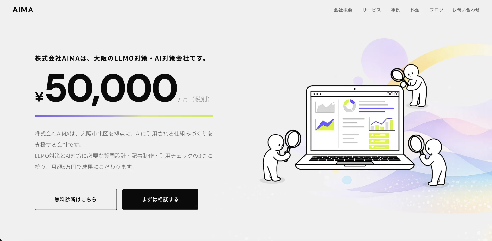
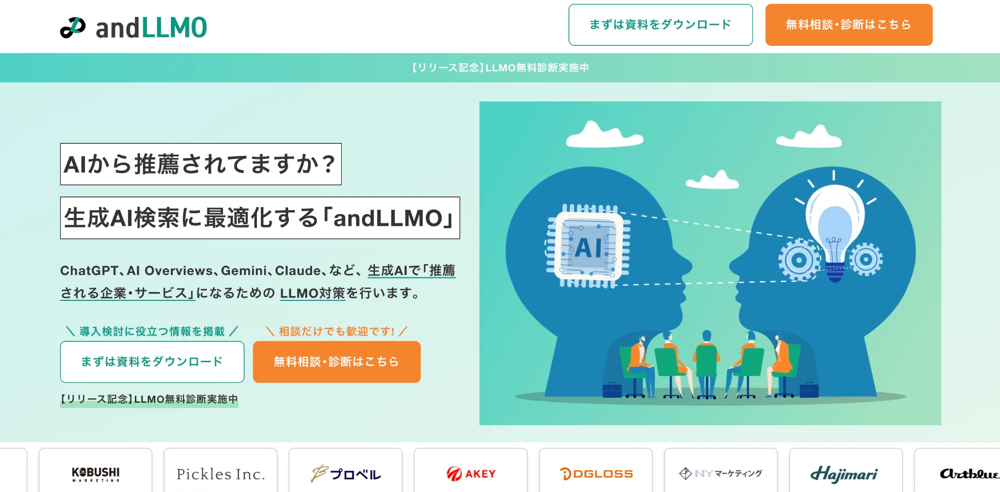
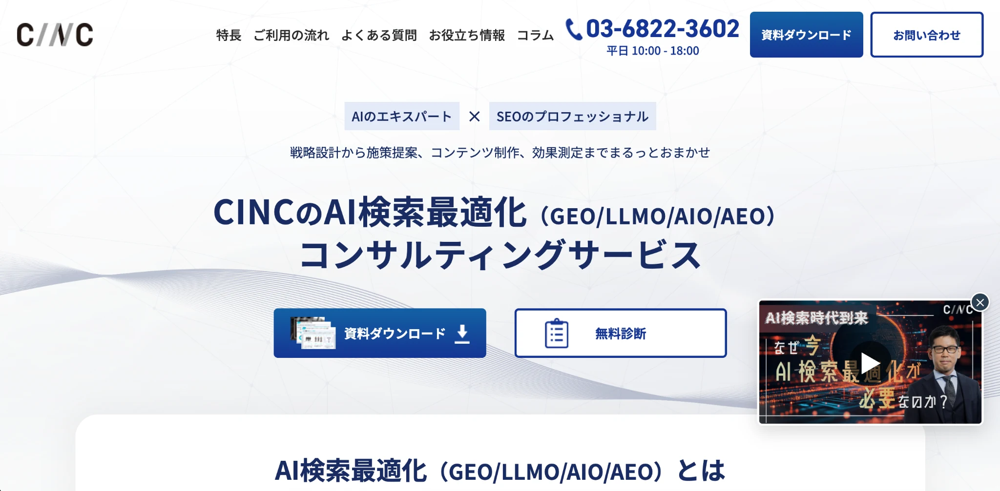
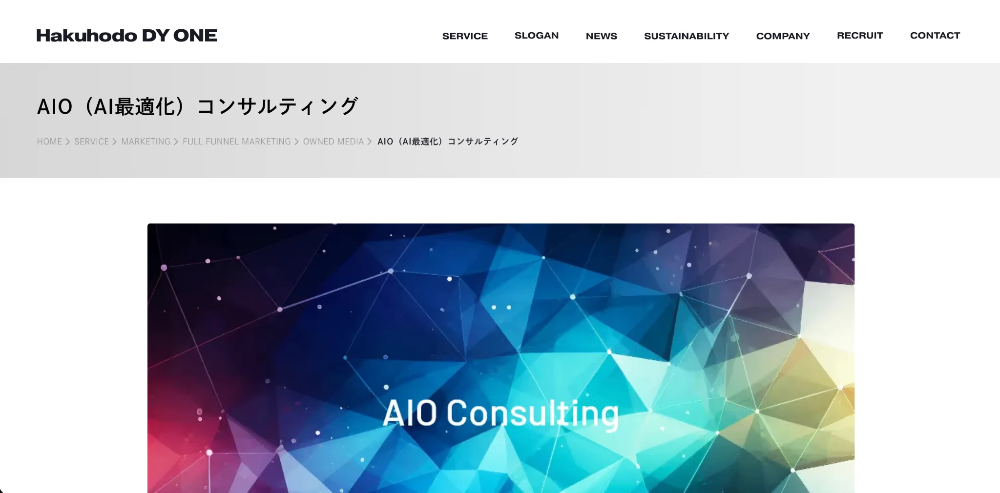
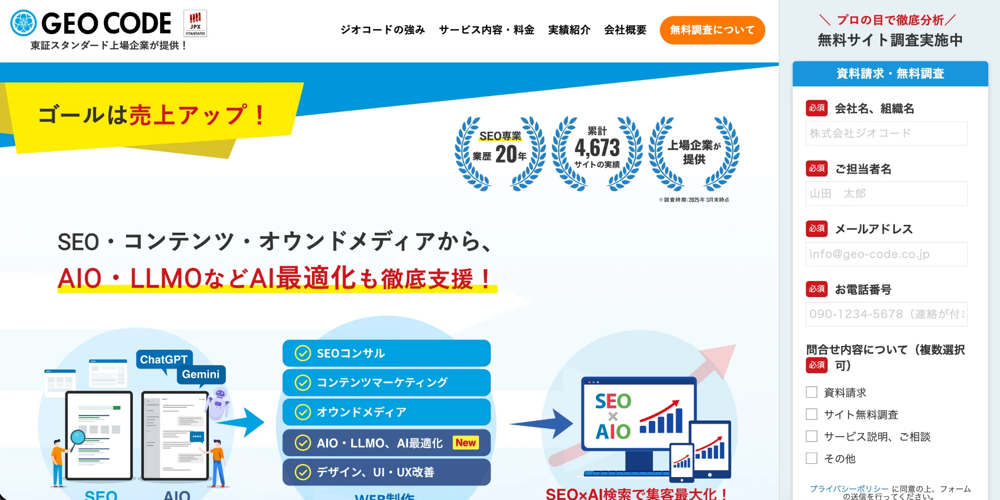
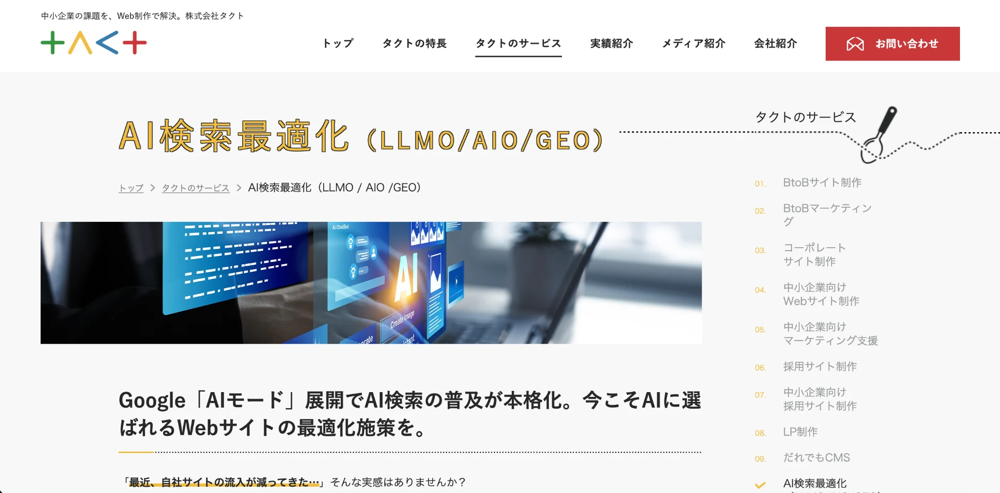
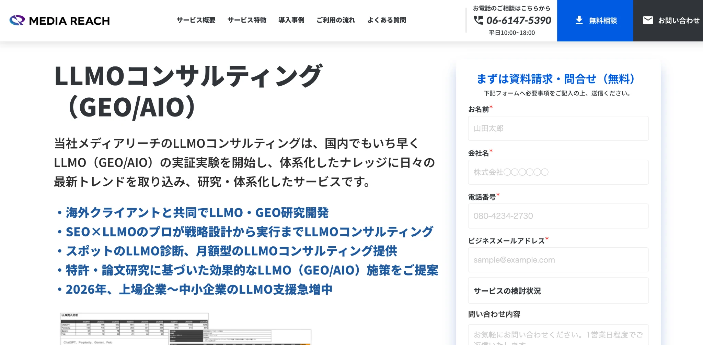
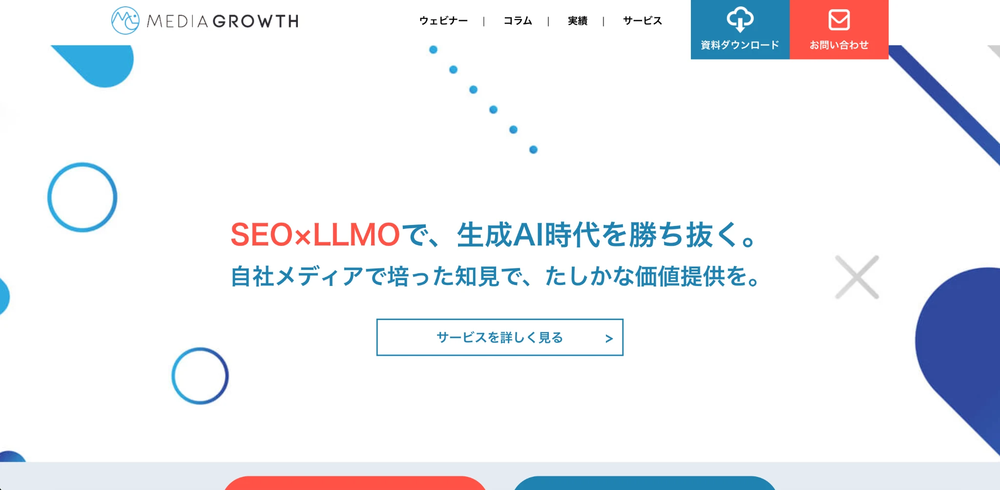
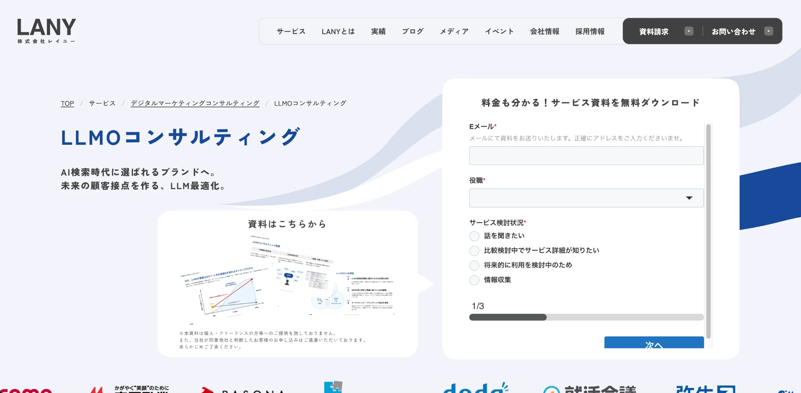
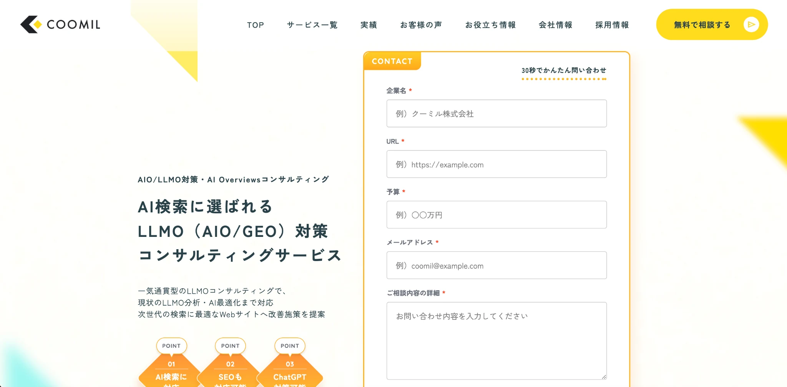

BtoBに強いおすすめのLLMO会社10選｜選び方・費用相場・依頼時の注意点を解説

BtoBでは、比較検討の初期段階からAIを使って候補を絞り込む動きが広がっています。今は検索結果で見つかるだけでなく、AI上で比較候補として認識されることが重要です。
本記事では、BtoBに強いおすすめのLLMO会社を10社比較しながら、選び方、費用相場、依頼時の注意点まで整理します。まずはLLMO対策の基本を押さえたい方は基礎記事から、費用感を優先して見たい方はLLMO対策会社の比較記事もあわせて確認しておくと判断しやすくなります。
BtoB向けの比較文脈で自社がどこまで候補入りできるかを見極めたい場合は、無料LLMO診断やサービスページも参考になります。「BtoBの比較検討導線を理解しているか」という観点で依頼先を見たい方は、このまま読み進めてください。
目次

BtoB企業がLLMO会社を探すべき理由
BtoB領域では、比較検討の初期段階からAIに質問し、候補を絞り込む動きが広がっています。従来は検索結果を見比べながら情報収集するのが一般的でしたが、今はAIに「おすすめの会社はどこか」「自社に合うサービスは何か」と尋ね、要点を短時間で把握しようとする担当者が増えています。
そのため、営業接点が生まれる前の時点で、自社がAI上の比較候補に入るかどうかが重要になってきました。問い合わせの前に候補入りできるかという視点で、LLMOの必要性を整理しておくべきです。
BtoBでは「比較・選定」の前段階でAIが使われやすい
BtoB商材は、検討期間が長く、比較すべき項目も多くなりやすいのが特徴です。価格だけでなく、機能、実績、導入体制、サポート範囲など確認ポイントが多いため、担当者は情報収集をできるだけ効率化したいと考えます。
そこで使われやすいのがAIです。たとえば「BtoBでおすすめのLLMO会社は？」「コンテンツ制作に強い会社は？」「中小企業でも依頼しやすい会社は？」といった形でAIに質問し、候補を絞り込む流れは今後さらに増えていくと考えられます。検索順位だけでなく、AIにどう認識されるかも重要になっています。
SEOだけでは取り切れない露出が増えている
これまでのWeb集客では、検索結果で上位表示されることが重要でした。ただ、AI検索が広がる中では、検索順位が高いだけで十分とは言えなくなっています。AIは単純に検索順位順で会社を紹介するのではなく、複数の情報をもとに比較しながら回答を組み立てるからです。

そのため、検索で一定の評価を得ていても、AI上では会社名が出てこないことがあります。逆に、検索順位が圧倒的でなくても、サービス内容や強み、対象企業、実績などが整理されていれば、AIの比較候補に入る可能性があります。BtoBでは、この違いが認知獲得や商談機会の差につながりやすく、SEOに加えてLLMOに取り組む必要性が高まっています。
問い合わせ前の認知獲得で差がつく
BtoBの購買行動では、問い合わせが発生する前の段階で、ある程度候補が絞られていることが少なくありません。つまり、営業担当が接触するより前に、「どの会社が有力候補として認識されるか」が勝負になっています。
AI上で「この領域に強い会社」として認識されれば、比較の土台に乗りやすくなります。そこで初めて、指名検索、サービスページの閲覧、資料請求、問い合わせといった次の行動につながります。反対に、AI上で存在感を持てていない会社は、実力があっても候補入りしにくくなります。LLMOは問い合わせを増やす前に、まず比較対象に入るための施策として捉えると実態に近いです。
参考：Forrester｜B2B Buyers Make Zero-Click Buying Number One
LLMOとは何かをBtoB向けにわかりやすく整理
LLMOという言葉を見かける機会は増えていますが、SEOやAIO、GEOとの違いがわかりにくいと感じる方も多いはずです。特にBtoBでは、単にAIに引用されればよいわけではなく、比較検討の文脈で自社がどう認識されるかが重要になります。
LLMOはAIに理解・参照・推薦されやすくするための施策
LLMOは、生成AIやAI検索に対して、自社の情報を見つけてもらいやすくし、内容を正しく理解してもらい、必要な場面で参照や言及の対象になりやすくするための取り組みです。単に記事本数を増やす施策ではなく、サービス内容、強み、対象企業、実績、料金の考え方といった情報をAIが読み取りやすい形で整理していく考え方に近いです。

BtoBでは、商材が複雑で比較されるポイントも多くなりやすいため、表面的な説明だけでは十分に伝わりません。どんな課題を持つ企業に向いているのか、他社と比べて何が違うのか、どのような支援範囲なのかまで整理しておくことで、AI上でも自社の特徴が伝わりやすくなります。
SEOとの違いは「検索順位」ではなく「AI上の選ばれ方」にある
SEOは検索結果で見つけてもらうための施策です。一方でLLMOは、AIが回答を生成する際に、自社の情報をどう扱うかに関わる施策です。BtoBでは、検索順位を上げることだけでなく、比較の中でどう説明されるかまで設計する必要があります。
| 項目 | SEO | LLMO |
|---|---|---|
| 主な目的 | 検索結果で上位表示され、見つけてもらうこと | AIの回答内で理解・参照・比較候補として扱われやすくすること |
| 主な接点 | Googleなどの検索結果ページ | ChatGPT、Gemini、Perplexity、GoogleのAI検索など |
| 評価されやすい要素 | キーワードとの一致、被リンク、内部対策、コンテンツ品質 | 情報の明確さ、文脈との一致、比較しやすさ、一次情報、信頼性 |
| 見られ方 | 1ページ単位で評価されやすい | 会社全体やサービス全体の情報が横断的に見られやすい |
| 成果の出方 | 検索流入やクリックが増える | AI上での言及、比較候補入り、指名検索や問い合わせ前の認知につながる |
| BtoBで重要な視点 | 検索順位を上げて流入を取ること | 比較の中で「どんな会社か」を正しく理解されること |
| 取り組み方 | 狙うキーワードごとにページを最適化する | 狙う質問に対して、会社情報・サービス情報・比較情報を整理する |
| 関係性 | 集客の土台になる | SEOを土台にしながらAI上の選ばれ方まで広げる施策 |
もちろん、SEOで蓄積したコンテンツや評価は土台として重要です。ただし、AI検索では、単に上位表示されているページがそのまま選ばれるわけではありません。AIは複数の情報をまとめながら回答を作るため、「どの会社がこのテーマに強いのか」「どのような企業に向いているのか」といった文脈まで見られます。
BtoBでは「引用されること」より「比較候補に入ること」が重要になりやすい
LLMOというと、AIに引用されることだけをイメージする方もいます。しかしBtoBでは、それ以上に重要なのが、比較検討の文脈で候補として認識されることです。担当者は最初から1社に絞って調べるのではなく、「おすすめの会社」「自社に合うサービス」「この業界に強い支援会社」などをまとめて知りたいからです。
このとき、自社がAI上で候補に入っていなければ、問い合わせ以前の段階で検討対象から外れてしまいます。逆に、特定の課題や業種、企業規模と結びついた形で認識されていれば、比較表や候補一覧の中に入りやすくなります。BtoBのLLMOは、比較検討の入り口で名前が挙がる状態をつくる施策として考えるのが現実的です。
BtoBに強いおすすめのLLMO会社10選
ここからは、BtoB企業が比較しやすいLLMO会社を紹介します。以下は時点で公開されている情報をもとに整理した要約です。知名度だけでなく、どこまで実行支援してくれるか、BtoBの比較検討型コンテンツに強いか、SEOやサイト改善まで見られるかを確認することが大切です。
| 会社名 | 主な特徴 | 向いている企業 |
|---|---|---|
| 株式会社AIMA | 質問設計・記事制作・引用チェックに絞ったシンプルな支援 | 小さく始めたい企業、費用を抑えて進めたい企業 |
| andmedia株式会社 | BtoB比較メディアを活かした外部評価設計に強み | 比較記事や第三者評価まで設計したい企業 |
| 株式会社CINC | SEO支援実績を土台にしたAI検索最適化支援 | 実績重視で伴走支援を受けたい企業 |
| 株式会社Hakuhodo DY ONE | 大手ならではの診断・戦略提案体制 | ブランド全体の認知設計も重視したい企業 |
| 株式会社ジオコード | SEO・実装・UI改善とあわせて進めやすい | サイト改善までまとめて相談したい企業 |
| 株式会社TACT | 技術面と情報の質を両方見直す設計 | コンテンツだけでなく技術面も整えたい企業 |
| 株式会社メディアリーチ | SEOとLLMOを一体で支援し、BtoB事例もある | 戦略から運用までしっかり伴走してほしい企業 |
| 株式会社メディアグロース | SEO起点でLLMOを進めやすい | まずは診断や短期施策から始めたい企業 |
| 株式会社LANY | 分析・ロードマップ・モニタリング体制に強み | 中長期でLLMOを運用したい企業 |
| クーミル株式会社 | Web制作と一体でAI検索対応を進めやすい | サイト構造から見直したい企業 |
1. 株式会社AIMA

株式会社AIMAは、大阪市北区を拠点にLLMO支援を行っている会社です。公式サイトでは、質問設計・記事制作・引用チェックの3つに作業を絞り、月額5万円で支援する形を打ち出しています。
支援内容がかなりシンプルなので、まずは小さく始めたい会社や、レポートや定例会議より実装を優先したい会社と相性が良いです。特に、BtoBでも予算を抑えながら比較記事やサービス情報の整備を進めたい企業に向いています。支援全体像はサービスページや会社概要もあわせて確認すると把握しやすいです。
2. andmedia株式会社

andmediaは、SEOとLLMOをあわせて支援している会社です。公式のandLLMOページでは、複数のBtoB比較メディアを自社で保有しており、AIが参考にしやすい外部評価記事を戦略的に構築・掲載できる点を強みとして訴求しています。
BtoBでは、自社サイト内の情報だけでなく、第三者評価や比較記事の存在が重要になりやすいため、この切り口は相性が良いです。比較系クエリで名前を出したい企業や、外部評価まで含めて設計したい企業に向いています。
参考：andmedia株式会社｜LLMO対策（AI SEO）のコンサルティングなら「andLLMO」
3. 株式会社CINC

CINCは、SEOやWebマーケティング支援の実績を土台に、AI検索最適化のコンサルティングを提供している会社です。公式サイトでは、2014年以降10年以上にわたり1,600社超を支援してきた知見を活かし、戦略策定から実行まで伴走すると案内しています。
また、ChatGPTやGemini、Perplexity、Google AI Overviewsにおける参照・言及状況を診断できる無料診断も用意されています。実績を重視して依頼先を選びたい企業や、既存SEOと連動して進めたい企業に向いています。
参考：株式会社CINC｜AI検索最適化（GEO/LLMO/AIO/AEO）コンサルティングサービス
4. 株式会社Hakuhodo DY ONE

Hakuhodo DY ONEは、GEO・LLMO・AEOなどを含む領域をAIOとして整理し、生成AIに特化した診断・コンサルティングを提供しています。公式サイトでは、主要AI検索エンジンにおけるブランド名やサービス名の掲載・引用状況を調査し、その結果にもとづいて改善提案を行うと説明しています。
広告やブランド戦略との接続も意識しながら進めたいBtoB企業にとって、検討候補に入れやすい会社です。ブランド全体の認知設計も重視したい企業に向いています。
参考：株式会社Hakuhodo DY ONE｜AIO（AI最適化）コンサルティング
5. 株式会社ジオコード

ジオコードは、SEO対策だけでなく、サイト修正、実装作業、UI改善、コンテンツマーケティング、外部リンク強化とあわせてAIO・LLMOを支援している会社です。公式サイトでは、通常プラン15万円からと案内されており、必要な施策を組み合わせて進めやすい構成になっています。
BtoB企業の中には、LLMOだけを単独で進めるより、既存サイトの改善やSEO施策とあわせて進めたい会社も多いため、そうした企業と相性が良いです。サイト改善までまとめて相談したい企業に向いています。
参考：株式会社ジオコード｜SEO対策・AIO・LLMOなどAI最適化も徹底支援
6. 株式会社TACT

TACTは、AI検索最適化において、技術面と情報の質の両方を改善する方針を打ち出している会社です。公式の案内では、構造化データ、表示パフォーマンス、モバイル対応などの技術的改善に加え、情報の構造化、コンテンツの信頼性・独自性・鮮度の向上を重視すると説明しています。
BtoBでは、ただ記事を増やすだけでは差がつきにくいため、サイト基盤と情報品質をまとめて見直したい企業に向いています。特に、コンテンツだけでなく技術面も整えたい場合に比較候補へ入れやすい会社です。
参考：株式会社TACT｜AI検索最適化（LLMO / AIO / GEO）
7. 株式会社メディアリーチ

メディアリーチは、SEOとLLMOを専門領域として掲げる会社です。公式サイトでは、LLMOコンサルティングとして戦略設計、施策設計、運用代行を提供し、SaaS企業のBtoBオウンドメディア事例も公開しています。
また、海外向け・多言語サイト向けのLLMO支援プランも案内しており、国内に限らず広い視点で支援を受けたい企業にも向いています。BtoBのリード獲得施策と組み合わせて考えたい企業にとって、候補に入れやすい会社です。
参考：株式会社メディアリーチ｜LLMOコンサルティング（GEO/AIO）
8. 株式会社メディアグロース

メディアグロースは、SEOを土台にLLMO支援を展開している会社です。公式サイトでは、SEO対策とLLMO対策を同時に提供できる点を強みとしています。
短期施策プランを単発20万円から用意しているため、まずは立ち位置の確認や優先順位の整理から入りたい企業にも向いています。SEOとAI検索対策を切り離さずに進めたい会社と相性が良いです。
参考：株式会社メディアグロース｜LLMOコンサルティング【生成AI・AI検索に選ばれるための対策】
9. 株式会社LANY

LANYは、LLMOを中長期のマーケティング施策として設計しやすい会社です。公式ページでは、初月にプロンプト調査、ブランド選定ロジックの分析、課題整理、ロードマップ作成、モニタリングダッシュボード構築まで行い、2か月目以降は施策実行支援と効果検証を進める流れを示しています。
さらに、SEOの深い知見とLLMの技術的理解を活かした分析を特徴として打ち出しています。中長期でPDCAを回したいBtoB企業に向いています。
10. クーミル株式会社

クーミルは、Web制作とあわせてAIO・LLMO対策を支援している会社です。公式サイトでは、一気通貫型のLLMOコンサルティングとして、現状分析からAI最適化まで対応すると説明しています。
また、BtoB向けWebサイト制作やオウンドメディア制作もサービスとして展開しているため、AI検索対応とサイト改善を同時に進めやすい点が特徴です。既存サイトの構造から整えたい会社に向いています。
参考：クーミル株式会社｜AIO/LLMO対策・AI Overviewsコンサルティング
地域軸でも比較したい場合は大阪でおすすめのLLMO会社10選、低コスト帯の判断軸を見たい場合はLLMO対策会社の比較記事も参考になります。
BtoB向けのLLMO会社を選ぶときの比較ポイント
LLMO会社を比較するときは、単に知名度や価格だけで判断しないことが大切です。BtoBでは、担当者がAIを使って複雑な比較や情報収集を進める流れが強まっており、どの会社に依頼するかで、その後の露出の質や商談化しやすさが大きく変わります。
BtoBの購買行動を理解しているか
BtoBのLLMOは、ただ「AIに引用される記事」を作るだけでは不十分で、比較検討のどの段階で、どのような質問がされるのかまで考えて設計する必要があります。BtoBは個人向けサービスよりも検討期間が長く、関係者も増えやすいからです。
たとえば、検討初期には「おすすめの会社」「業界に強いサービス」「中小企業向けでも依頼しやすい支援会社」などの質問がされやすく、比較が進むと「費用感」「支援範囲」「他社との違い」といった観点が重視されます。こうした流れを理解していない会社に依頼すると、BtoBの検討導線とズレたコンテンツが増えやすくなります。
戦略だけでなく、実行まで支援してくれるか
LLMO支援会社によって、対応範囲はかなり異なります。現状分析や戦略設計までを中心に行う会社もあれば、記事制作、サイト改善、継続的な運用支援まで踏み込む会社もあります。自社にリソースが十分にあるなら戦略支援だけでも回せますが、社内で実装する人手が足りない場合は、実行支援まで含めて見たほうが現実的です。
特にBtoBでは、狙う質問の整理だけでなく、比較記事や導入事例、サービスページ、会社情報の見せ方まで整える必要があります。提案資料だけで終わる会社なのか、実際に記事を作るのか、既存ページの修正や改善まで支援するのかで、成果の出やすさは大きく変わります。どこまでを支援範囲としているのかを契約前に確認したいところです。
SEOやサイト改善と切り離さずに考えられるか
LLMOは新しい領域ですが、SEOと完全に別物として進めるより、既存のSEO施策やサイト改善とつなげて考えたほうが進めやすいケースが多いです。AIに正しく理解されやすいサイトは、ユーザーにとってもわかりやすく整理されていることが多く、タイトル、構造、一次情報、ページの役割分担など、SEOと重なる基礎が多いからです。
また、会社によっては、コンテンツ制作だけでなく、テクニカル調査やサイトリニューアル時の改善支援まで対応しています。BtoBでは、オウンドメディアだけ強くても、サービスページや会社概要が弱いと、AI上で企業像が伝わりにくくなります。サイト全体の情報設計とあわせて考えられる会社のほうが相性が良い場合があります。
一次情報や事例づくりに強いか
BtoBのLLMOでは、一般論をまとめた記事だけでは差がつきにくくなります。比較される会社ほど、導入事例、実績、対応範囲、得意な業種、独自の考え方といった一次情報が整理されており、それがAI上の認識にも影響しやすくなります。
そのため、依頼先を選ぶときは、単に記事制作ができるかどうかではなく、自社ならではの情報をどう整理し、どのページで見せるかまで考えられるかを見ることが重要です。抽象論ではなく、自社の実績や支援方針が伝わる情報のほうが比較検討の段階で効きやすくなります。
継続的なモニタリングと改善ができるか
初期診断だけでなく、モニタリングや改善提案まで継続して行える会社かどうかも重要です。LLMOは、一度ページを作って終わりではありません。AI検索は変化が速く、どの質問で自社が出るのか、どの文脈で競合が優先されているのかを継続的に見ながら調整する必要があります。
特にBtoBでは、1つの質問で名前が出るだけでは十分ではなく、「おすすめ」「比較」「選び方」「業界特化」など複数の切り口で候補入りする状態をつくる必要があります。定期的に何を確認するのか、どのような指標で効果を見るのかまで説明できる会社のほうが、長期的には成果につながりやすいです。現状整理から始めるなら無料LLMO診断のような入口も有効です。
BtoB向けLLMO会社の費用相場
BtoB向けのLLMO支援は、依頼する範囲によって費用が大きく変わります。公開情報を見ると、かなり低価格から始められる会社もあれば、診断や戦略設計、実装支援まで含めて高額になる会社もあります。単に月額料金だけを見るのではなく、何が含まれているのかを確認することが重要です。
診断のみを依頼する場合の費用感
診断のみを依頼する場合の費用は、10万円から50万円前後がひとつの目安です。調査内容が深くなったり、分析範囲が広がったりすると、100万円近くになることもあります。
BtoB企業が診断を受ける大きなメリットは、記事制作や大規模な改善に入る前に、どこから着手すべきかを明確にできることです。なぜ競合がAI上で先に表示されるのか分からない企業や、自社がどの質問で候補に入りそうか整理できていない企業は、まず診断から始めると無駄な投資を防ぎやすくなります。
戦略設計や月額コンサルを含む場合の費用感
戦略設計や月額コンサルまで含める場合は、月額5万円から30万円前後が比較的導入しやすい価格帯です。支援範囲が広がると、月額30万円から100万円以上になることもあります。モニタリングや改善提案、定例ミーティング、優先順位の整理、競合比較などが含まれることが多いです。
実際に公開料金を見ると、株式会社AIMAは月額5万円、andmedia株式会社は月額10万円、株式会社ジオコードは15万円から、株式会社メディアグロースは短期施策20万円からと案内しています。このように、公開価格だけ見ても費用にはかなり幅があります。ただし、本当に見るべきなのは金額そのものではなく、質問設計まで含むのか、記事制作は別料金なのか、技術改善まで対応してくれるのかという支援内容です。
コンテンツ制作や実装伴走まで含む場合の費用感
コンテンツ制作や実装伴走まで含む場合は月額数十万円規模になることが多く、支援範囲が広いほど費用も上がりやすくなります。特にBtoBでは、オウンドメディアの記事だけでなく、サービスページ、会社概要、事例ページ、比較検討向けの記事など、複数のページを連動させて整える必要があります。
単発の助言だけでは足りず、コンテンツ制作や改善実装を含む支援のほうが現実的なケースも少なくありません。費用だけ見ると高く感じやすいですが、その分、社内工数を削減できるメリットもあります。費用感を優先して比較したい方はLLMO対策会社の比較記事もあわせて確認しておくと整理しやすいです。
参考：株式会社ジオコード｜SEO対策・AIO・LLMOなどAI最適化も徹底支援
BtoB企業がLLMOで成果を出すために必要な施策
BtoB企業がLLMOで成果を出すには、単に記事を増やすだけでは足りません。AI検索では、複雑な質問や比較を前提とした情報収集が増えており、その中で自社がどの文脈で認識されるかが重要になります。
実際、BtoB買い手のAI利用はかなり進んでおり、ForresterはBuyers’ Journey Survey, 2025をもとに、買い手の94%が購買プロセスでAIを使っていると紹介しています。
While the proportion of buyers using AI only grew five percentage points, to 94%, twice as many buyers named generative AI or conversational search as a more meaningful or important source of information than any other source.
調査や比較の初期段階からAIを使う流れが強まっていることを踏まえると、BtoB向けのLLMOは一部の先進企業だけの施策ではなくなりつつあります。そのため、BtoB向けのLLMOでは、狙う質問の整理、比較検討向けコンテンツの整備、一次情報の強化、継続的な改善までをセットで進める必要があります。
狙う質問を先に決める
LLMO施策で最初にやるべきことは、どの質問で自社を見つけてもらいたいのかを明確にすることです。BtoBでは、「おすすめの会社はどこか」「自社の課題に合うサービスは何か」といった比較型の質問が多くなります。ここを曖昧なまま進めると、何を作ればよいのか、どのページを優先すべきかがぶれやすくなります。
同じサービスでも、企業規模、業種、課題、導入フェーズによって聞かれる質問が変わります。たとえば「中小企業向け」「製造業向け」「比較記事に強い」「費用を抑えて始めたい」といった切り口ごとに、AIに聞かれやすい質問は異なります。まずは取りたい比較文脈を整理することが重要です。
比較・選定系のコンテンツを優先して整える
BtoBでは、単なる用語解説よりも、比較や選定の場面で使われるコンテンツの重要性が高くなります。担当者は情報収集の初期段階で「どこが候補になるのか」を知りたがるからです。そのため、LLMOで成果を出したいなら、「おすすめ」「比較」「選び方」「業界別」「費用相場」などのテーマを優先して整えたほうが効率的です。
こうしたコンテンツは、検索流入を取るためだけでなく、AIに自社の立ち位置を伝える役割も持ちます。BtoBでは、サービスページだけでは比較検討の文脈を十分に取り切れないことが多いため、比較記事や選定ガイドのようなページが重要になります。
会社情報・サービス情報をAIに伝わる形で整理する
BtoBのLLMOでは、記事だけでなく、会社概要、サービスページ、導入事例、料金ページといった基本情報の整備も欠かせません。AIが企業を比較候補として扱うには、その会社が何をしていて、どのような企業に向いていて、何が強みなのかがわかる必要があるからです。
たとえば、対応範囲が曖昧だったり、対象企業が書かれていなかったり、実績が断片的だったりすると、AI上で企業像がつかみにくくなります。反対に、得意領域、支援範囲、料金の考え方、支援実績、他社との違いが整理されていれば、比較文脈の中でも自社の特徴が伝わりやすくなります。まずはサービスページや会社概要が十分かを確認しておくべきです。
一次情報と事例を増やして信頼性を高める
Googleは、AI検索を含む検索全体で、役に立つ、信頼できる、人のためのコンテンツを重視する姿勢を明確にしています。
Google の自動ランキング システムは、検索エンジンでのランキングを操作することを目的として作成されたコンテンツではなく、ユーザーにメリットをもたらすことを目的として作成された、有用で信頼できる情報を検索結果の上位に掲載できるように設計されています。
出典：Google Search Central｜Creating helpful, reliable, people-first content
BtoBのLLMOでは、一般論を並べただけのページより、自社ならではの一次情報を含むコンテンツのほうが強くなりやすいです。たとえば、導入事例、実際の支援プロセス、調査データ、独自の考え方、失敗事例を踏まえたノウハウなどは、他社と差がつきやすい要素です。
BtoBでは、担当者が社内で説明材料を探していることも多いため、抽象的な説明よりも、具体的で再利用しやすい情報のほうが価値を持ちます。一次情報を整理して増やしていくことは、AI上の評価だけでなく、実際の商談化にもつながりやすい施策です。
継続的にモニタリングして改善する
LLMOは、一度ページを公開して終わる施策ではありません。AI検索は変化が速く、同じ質問でも出てくる企業や文脈が変わることがあります。そのため、どの質問で自社が出ているのか、どのテーマで競合が優先されているのか、どのページが弱いのかを継続的に見ながら調整する必要があります。
特にBtoBでは、「おすすめ」「比較」「選び方」「業界別」など複数の入口を取りに行く必要があります。1つの質問で名前が出るだけでは不十分で、複数の比較文脈で安定して候補入りする状態を目指したほうがよいです。公開後も定期的に見え方を確認し、足りないテーマや情報を追加していく運用が欠かせません。社内で棚卸ししにくい場合は無料LLMO診断で現状を把握しておくと次の一手を決めやすくなります。
参考：Forrester｜B2B Buyers Make Zero-Click Buying Number One
参考：Google Search Central｜Helpful, reliable, people-first content
参考：Google Search Central｜AI features and your website
LLMO会社が向いている企業・向いていない企業
LLMOは、すべてのBtoB企業に同じように向いているわけではありません。AIを使った情報収集や比較が広がっているとはいえ、商材の特性や営業の進め方、社内で公開できる情報量によって、優先度は変わります。
LLMOが向いている企業
LLMOが向いているのは、まず比較検討されやすい商材を扱っている企業です。たとえば、複数社を比較したうえで導入先が決まるサービスや、導入前に情報収集が長く続く商材は、AI検索との相性がよくなります。
具体的には、マーケティング支援、SaaS、制作会社、コンサルティング、業務代行、採用支援のように、比較記事やおすすめ記事の文脈で検討されやすい企業は特に向いています。また、検索経由やWeb経由で新規リードを獲得したい企業にも相性があります。専門性が高く、文章や事例で価値を伝えやすい企業ほど差別化しやすいです。
LLMOが向いていない企業
一方で、現時点ではLLMOの優先度がそこまで高くない企業もあります。たとえば、紹介営業や既存顧客からの継続受注だけで十分に案件が回っている企業は、急いで取り組まなくても大きな問題にならないことがあります。また、対象顧客が極端に限定されていて、そもそもWeb上での比較が起きにくい商材も優先度は下がりやすいです。
さらに、公開できる情報が少なすぎる企業も、LLMOとの相性はやや弱くなります。BtoBのLLMOでは、サービス内容、得意領域、支援実績、導入事例、料金の考え方など、比較検討に使える情報がある程度必要です。まずは情報を出せる状態を整えることが先になるケースもあります。
BtoB向けおすすめLLMO会社に関するよくある質問
BtoB向けのLLMO会社を検討するときは、支援内容や費用だけでなく、SEOとの違いや、どこまで効果が出るのかも気になりやすいものです。ここでは、比較検討の段階でよく出やすい疑問を整理します。
LLMOとSEOはどちらを優先すべきですか？
どちらか一方だけを選ぶというより、既存のSEOを土台にしながらLLMOを進める考え方が現実的です。Googleも、AI OverviewsやAI Modeに出るために特別な追加要件があるわけではなく、基本的なSEOのベストプラクティスが引き続き有効だと案内しています。
SEO のベスト プラクティスは、引き続き Google 検索の AI 機能（AI による概要や AI モードなど）でも有効です。AI による概要や AI モードにコンテンツが表示されるための追加の要件はなく、別途特別な最適化を行う必要もありません。ただし、SEO の基本のベスト プラクティスを再度確認することは常に効果的な方法です。
そのため、まずは検索でもAI検索でも評価されやすい情報設計を行い、そのうえで比較記事や会社情報の整備を進めるのがよいです。SEOを土台にしながら、AI上の選ばれ方まで広げるイメージで考えると理解しやすくなります。
BtoB向けのLLMO会社に依頼すると費用はどれくらいかかりますか？
費用は支援範囲によって大きく変わります。診断だけなら単発で数十万円前後から見られますし、月額コンサルや継続支援になると月額5万円から30万円前後がひとつの入口になります。
さらに、記事制作やサイト改善まで伴走する場合は、月額数十万円規模になることもあります。重要なのは、金額だけでなく、何が含まれているかを確認することです。
診断だけ依頼しても意味はありますか？
あります。特に、自社がAI上でどう見られているのか、競合がどの質問で出ているのかが整理できていない企業には有効です。いきなり大きく依頼するより、まずは診断で課題と優先順位を見極めたほうが、その後の投資判断もしやすくなります。
記事制作だけでLLMO対策はできますか？
記事制作は重要ですが、それだけで十分とは限りません。BtoBでは、比較記事や選び方記事に加えて、会社概要、サービスページ、導入事例、料金ページなどもAI上の認識に影響しやすくなります。
そのため、記事だけでなく、企業情報全体を整理する視点が必要です。まず自社の土台を見直したい場合は、サービスページや会社情報が比較検討の受け皿として十分かを確認しておきましょう。
BtoB向けのLLMO会社を選ぶときに最も重要な基準は何ですか？
一番重要なのは、BtoBの比較検討の流れを理解したうえで、戦略だけで終わらず実行まで支援できるかどうかです。BtoBでは、誰がどの段階で何を比較するのかが複雑になりやすいため、この前提を理解していない会社だと施策がずれやすくなります。
あわせて、成果指標、支援範囲、SEOや既存サイトとの接続まで確認すると選びやすくなります。価格だけでなく、BtoBの購買導線を理解しているかを必ず見ておくべきです。
まとめ
BtoB向けのLLMO会社を選ぶときは、単に「AI対策ができるか」ではなく、BtoBの比較検討プロセスを理解し、どの質問で候補入りを狙うのかまで設計できるかを見ることが大切です。実際に、BtoB買い手のAI利用はかなり進んでおり、比較検討の前段階からAIを使う流れは今後さらに強まると考えられます。
そのため、依頼先を選ぶ際は、価格の安さだけでなく、支援範囲、BtoBの理解、一次情報の整理、継続的な改善体制まで含めて判断したほうが失敗しにくくなります。まずは、自社がどの比較文脈で認知を取りたいのかを整理し、それに合った会社を選ぶことが重要です。
迷う場合は、比較文脈の設計と現状把握から小さく始めるのが現実的です。基本から見直したい方はLLMO対策の基礎記事、費用感を優先したい方はLLMO対策会社の比較記事もあわせて確認してみてください。